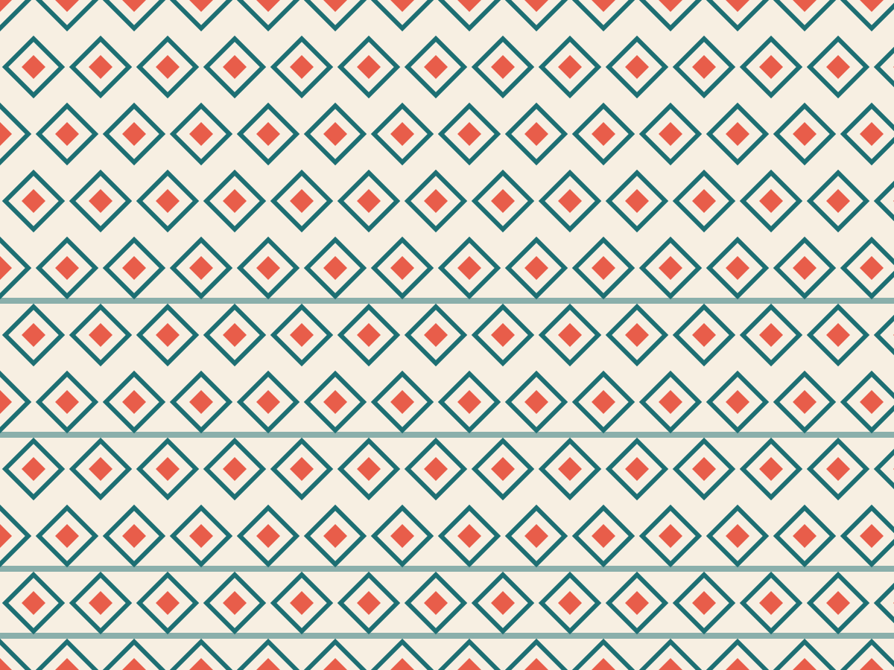
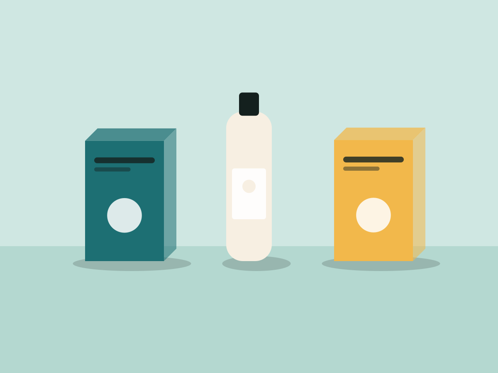
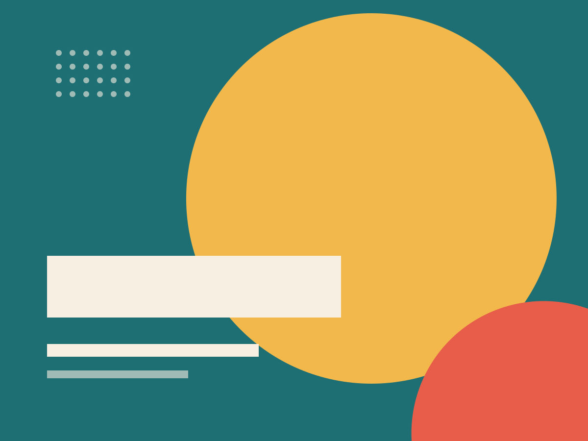
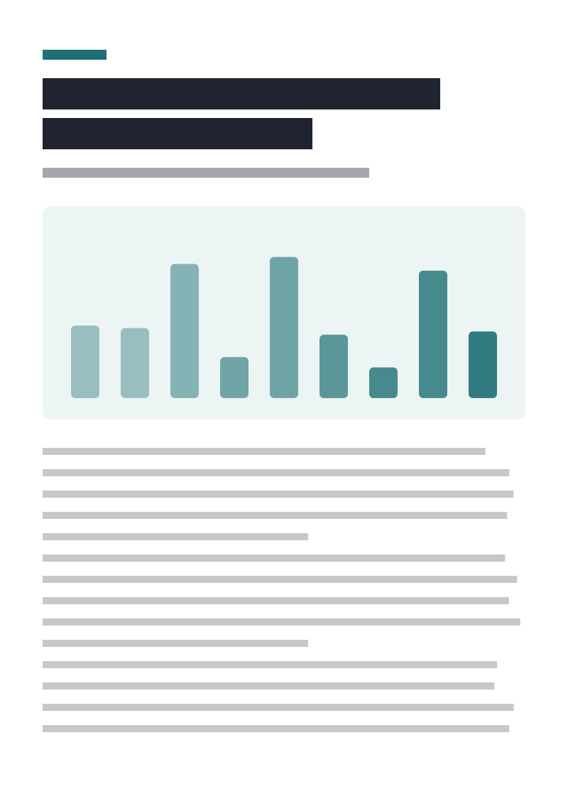

Identitas Tenun Lestari
Identitas, kemasan, dan toko pop-up untuk koperasi 120 perajin tenun.
Masalah
Koperasi 120 penenun di Karangasem menjual kain terbaik, tapi di pameran mereka kalah menonjol dari merek kota. Kemasan dan papan nama dibuat seadanya.
Peran saya
- Riset motif bersama 12 penenun senior.
- Merancang logo, sistem warna, label kain, dan kotak kemasan.
- Mengarahkan desain toko pop-up untuk pameran Jakarta.
- Penjualan pameran
- Rp186 jtnaik, baik: 2×
- pameran Jakarta pertama
- Pembeli kembali
- 38%naik, baik: +21 poin
- 6 bulan setelah pameran
- Perajin aktif
- 120naik, baik: +34
- anggota koperasi



Proses
Logo diambil dari pola dasar kain gringsing yang disederhanakan menjadi empat bentuk. Setiap penenun mendapat label dengan nama dan desanya.
Kemasan memakai karton daur ulang dan satu warna cetak agar biaya per kotak tetap di bawah Rp4.000.
Pembeli ingin tahu siapa yang menenun kainnya. Label itu kini jadi bagian yang paling sering difoto.
Pemutar YouTube baru dimuat setelah tombol putar diklik.

Studi kasus lengkap dengan mockup dan foto pop-up.
behance.netHasil
Penjualan di pameran Jakarta pertama naik dua kali lipat dibanding pameran sebelumnya, dan 38% pembeli kembali membeli dalam enam bulan.